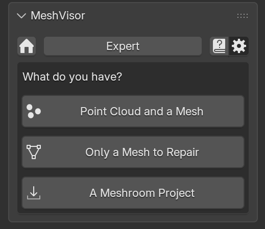
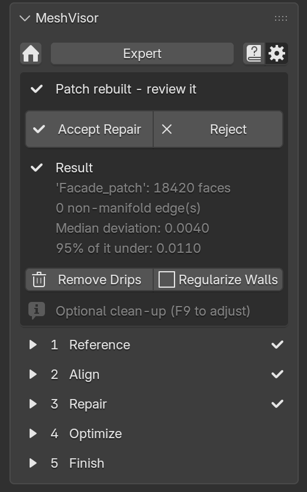
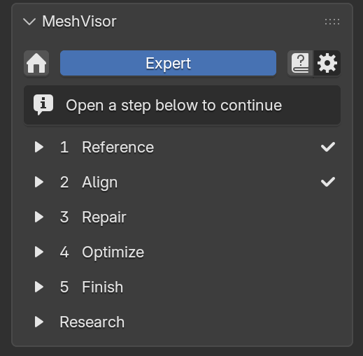
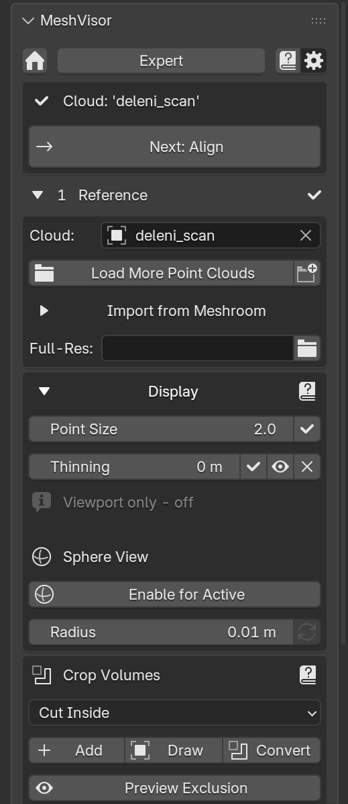
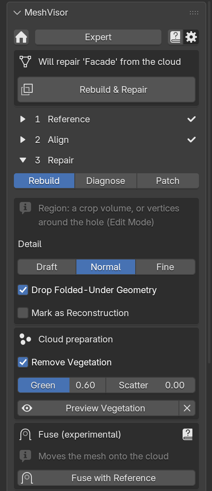
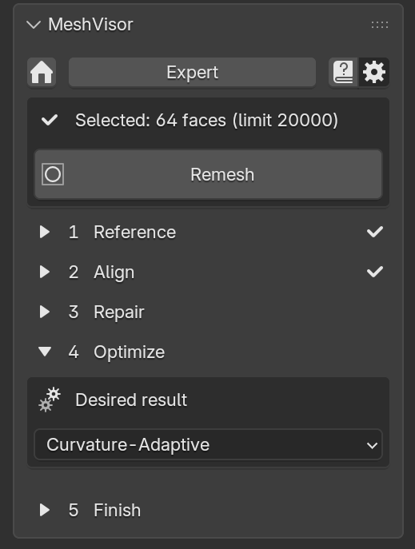
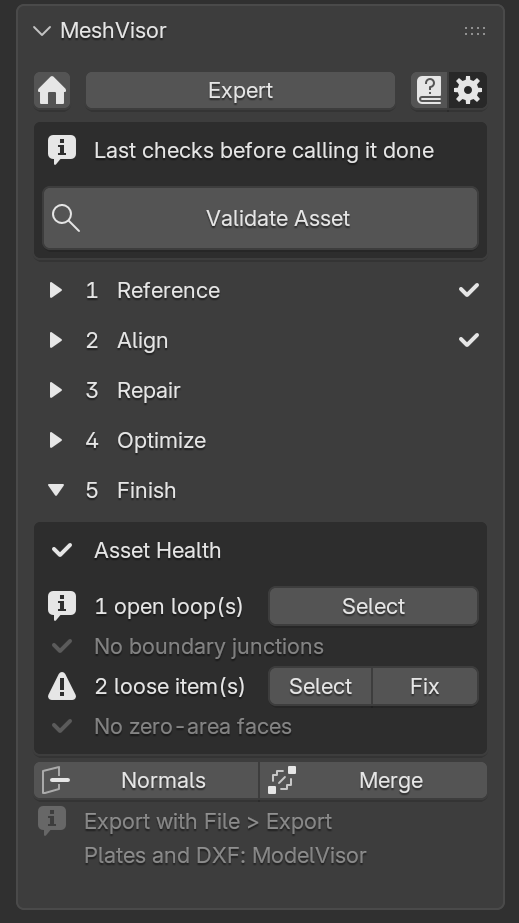

MeshVisor
Qué es
MeshVisor es un complemento de Blender para el paso entre un escaneo 3D y un modelo utilizable. La fotogrametría y los escaneos láser salen con agujeros donde la cámara no pudo ver, solapas plegadas bajo sí mismas, restos dispersos y una escala arbitraria. MeshVisor los repara y, siempre que puede, los repara a partir de mediciones reales y no por conjetura.
Su idea distintiva es una nube de puntos de referencia, normalmente un escaneo láser. La malla fotogramétrica se ajusta a la nube y de ella se obtiene su escala real. Después, las zonas dañadas se reconstruyen a partir de los puntos medidos, y antes de aceptar el resultado se ve cuánto se aleja de ellos. Para los agujeros sin datos de referencia, un parche clásico rellena el hueco y reproduce el tamaño de los triángulos, la curvatura y el detalle superficial de su entorno.
Mark Hole Boundary →
Patch.Con un escaneo láser: Reference (cargue la nube) → Align (
Fit to Reference) →
Repair › Rebuild (Rebuild & Repair → revise las cifras → Accept Repair).
Los modelos físicos (placas de curvas de nivel, DXF, bases para impresión 3D) están en un complemento aparte, ModelVisor.
Filosofía
La verdad histórica, no una superficie lisa
El escaneo de un edificio o de un objeto es un documento. MeshVisor no hace ajustes ni aproximaciones ocultos: una reparación nunca debe pasar por original. Sigue la regla que aplican los restauradores en las reintegraciones volumétricas de objetos arqueológicos: lo añadido es discernible de cerca y armoniza con el conjunto a distancia.
- Las zonas reconstruidas y parcheadas pueden llevar su propio material de reconstrucción.
- Stamp muestra sus reparaciones en el Reconstruction Colour (color de reconstrucción), entonado o en tinta plana, y marca cada cara que ha modificado (
mv_stamped). El color nunca se funde con el original alrededor de una reparación. - Suavizar la unión en un borde solo se permite en la geometría, cuando elimina un escalón que el escaneo nunca tuvo, y nunca en el color.
- El relieve copiado de otra zona se puede desactivar (Relief Strength 0), de modo que un modelo de levantamiento muestre solo lo que se midió en ese lugar.
Mediciones antes que invenciones
Un agujero relleno es una afirmación sobre una superficie que nadie vio. Cuando un escaneo de referencia tiene puntos reales en esa zona, MeshVisor reconstruye a partir de ellos. Cuando no los tiene, lo indica y recurre a un parche que solo prolonga la superficie circundante. La zona reconstruida puede llevar su propio material, la convención de la conservación para las reintegraciones, de modo que siga siendo identificable más adelante.
Basado en la bibliografía
Los algoritmos principales proceden de trabajos publicados de procesamiento geométrico: remallado isótropo y adaptativo a la curvatura, métricas de error cuádrico, alisado (fairing) biarmónico, reconstrucción Screened Poisson, ICP con la similitud en forma cerrada de Umeyama, normales por PCA. Véase Bibliografía.
Previsualizar, medir y después aceptar
Los pasos destructivos muestran su resultado antes de aplicarse. Rebuild & Repair deja su parche como un objeto aparte, con su desviación respecto al escaneo, hasta que usted lo acepta con Accept o lo rechaza con Reject. Las herramientas de selección seleccionan; no borran. Cada operador se deshace con un solo Ctrl+Z.
Primero lo sencillo, sin que falte nada
El panel muestra el recorrido habitual: una tarjeta con la acción siguiente y cinco pasos que contienen solo lo necesario. Los parámetros que cambian cómo se obtiene un resultado (ajustes internos de Poisson, Settings Sweep, herramientas de depuración) aparecen al activar Expert, apartados hasta que los necesite.
A quién va dirigido
Adecuado para
- Fotogrametría de edificios, ruinas, monumentos y terreno, sobre todo cuando existe un escaneo láser del mismo lugar.
- Documentación y restauración del patrimonio: reconstrucciones que se pueden medir y que siguen siendo identificables después.
- Limpieza de escaneos en bruto: vértices sin soldar, uniones de borde, solapas plegadas, restos sueltos, astillas de área cero.
- Objetos y piezas con agujeros debidos a los ángulos muertos de la cámara.
Menos adecuado para
- CAD de precisión. Los cilindros y planos exactos se hacen mejor con las herramientas de modelado de Blender o con software CAD.
- Parches muy grandes (más de unas 50 000–70 000 caras de una vez). Patch y Remesh están escritos en Python puro, así que conviene dividir los agujeros grandes en secciones. Rebuild, que ejecuta Poisson como programa nativo, maneja mucho mejor las regiones grandes.
- Convertir una nube de puntos en bruto en un modelo completo. Rebuild reconstruye regiones; para un modelo completo, la herramienta adecuada es un software específico de fotogrametría.
Instalación
- Si hay una versión anterior instalada:
Edit → Preferences → Add-ons, busque MeshVisor y pulse Remove. - Instale el
.zip: arrástrelo a la ventana de Blender o useInstall from Disken el mismo menú. - Marque la casilla para activarlo. El panel está en la barra lateral del visor 3D (N), pestaña MeshVisor.
Probado en Blender 4.5 – 5.3. Rebuild usa PoissonRecon y SurfaceTrimmer de Michael Kazhdan
(licencia MIT). Las compilaciones para Windows y Linux vienen incluidas en el complemento. En macOS,
compílelas a partir del código fuente y después indique su ubicación en
Preferences › Add-ons › MeshVisor › Rebuild Executables. Check Executables
confirma que se encuentran.
Flujo general
- Reference: cargue la nube de puntos de referencia, hágala legible en el visor y recorte lo que no necesite.
- Align: ajuste la malla a la nube (y recupere su escala real), o alinee varios escaneos entre sí.
- Repair, tres subsecciones de una misma tarea:
- Rebuild: reconstruir una región dañada a partir de la nube.
- Diagnose: encontrar y corregir problemas generales de la malla.
- Patch: rellenar un agujero sin datos de referencia.
- Optimize: reajustar la densidad de triángulos en una selección, normalmente un parche recién creado.
- Finish: validar el resultado y corregir lo que quede antes de exportar.
Sin un escaneo de referencia, empiece directamente por Repair: Diagnose y después Patch. La pantalla de inicio ofrece ese recorrido como Only a Mesh to Repair. El panel explica la tarjeta, los pasos y el botón Expert.
El panel
El panel tiene tres partes, de arriba abajo: una cabecera, una tarjeta con la acción siguiente y la lista de pasos.

Pantalla de inicio
Mientras no se haya elegido una nube de referencia, el panel pregunta qué tiene. Point Cloud and a Mesh abre Reference. Only a Mesh to Repair abre Repair › Diagnose. A Meshroom Project abre Reference con la importación de Meshroom desplegada. El icono de la casa en la cabecera vuelve a esta pantalla.

La tarjeta
La tarjeta bajo la cabecera indica en qué punto está y ofrece la única acción siguiente como
un botón grande: Load Point Clouds from Folder, Fit to Reference,
Rebuild & Repair, Mark Hole Boundary, Patch, Remesh,
Validate Asset. Cuando un paso necesita el modo Edición, el botón es
Enter Edit Mode. Mientras algo se ejecuta, la tarjeta muestra la barra de progreso, con
Stop cuando la tarea se puede detener. Después de un Rebuild muestra el resultado, con
Accept y Reject.

Modo Edición
Diagnose, Patch, Optimize y Finish actúan sobre los vértices y las caras de la malla, por lo que necesitan el modo Edición. Cuando abre uno de estos pasos en modo Objeto, la tarjeta nombra la malla seleccionada y ofrece Enter Edit Mode. Las opciones del paso aparecen una vez dentro. Si no hay ninguna malla seleccionada, la tarjeta pide que seleccione una.

Resultados y progreso
Después de Fit, Rebuild, Patch y Remesh, la tarjeta muestra el resultado siempre con la misma forma: un titular, las cifras y cómo deshacer. Mientras una tarea se ejecuta, la misma tarjeta muestra la barra de progreso, con Stop cuando la tarea lo tiene. Las demás se detienen con Esc.

Revisar una reconstrucción
Un Rebuild no modifica la malla de inmediato. El parche nuevo es un objeto aparte, y la tarjeta espera su decisión: Accept Repair lo suelda a la malla y Reject lo elimina. Seleccione el parche en la vista para que Accept esté disponible. Remove Drips y Regularize Walls son limpiezas opcionales que se ejecutan antes de aceptar.

El último resultado
Después de un ajuste, la tarjeta conserva el último resultado bajo los botones: la escala encontrada, cuánto se movió el modelo y el residuo. El residuo es la distancia que queda entre el modelo y la nube, indicada también como porcentaje del tamaño del modelo. Por debajo del 1 % el ajuste es bueno, y a partir del 3 % la tarjeta lo marca como dudoso. Fit Again repite el ajuste, y F9 cambia sus ajustes.

Pasos
Reference, Align, Repair, Optimize y Finish forman una lista numerada. Haga clic en un paso para abrirlo y otra vez para cerrarlo. Solo hay un paso abierto a la vez, y una marca indica los pasos ya hechos. Un paso abierto contiene sus opciones; la acción está en la tarjeta.
Simple y Expert
El botón Expert de la cabecera es el único control de complejidad. Desactivado, cada paso muestra lo necesario. Activado, cada paso añade sus opciones finas y sus mediciones, la lista incorpora el paso Research y Settings muestra los ejecutables y las herramientas de depuración. Las opciones ocultas en Simple conservan su valor y siguen aplicándose.
Preajustes
En Simple, dos ajustes son preajustes y no números. Detail de Rebuild es Draft, Normal o Fine (profundidad del octree 6, 8 o 10), y Smooth Surface es Light, Medium o Strong. Expert muestra los números. Con un valor fijado a mano, ningún preajuste aparece resaltado.
Ajustar después de ejecutar (F9)
Smooth Surface y Fit to Reference se pueden afinar después de ejecutarse: pulse F9 (Adjust Last Operation), cambie un valor y la operación se repite con él. El panel conserva lo que fije ahí. Stamp funciona igual. Patch, Remesh y Rebuild trabajan en segundo plano y no se pueden repetir así.
Menú circular de herramientas
Shift+Alt+V en la vista abre las herramientas que actúan bajo el cursor: Draw Crop Volume, Add Crop Volume, Mark Alignment Point, Mark Hole Boundary, Select Boundary Loop, Pick Stamp Source, Stamp Selected Faces y Pick Geometry Source. Las que no se aplican en el modo actual aparecen atenuadas. El atajo se cambia en Preferences › Keymap, y Settings tiene un botón que abre el menú. Mientras una herramienta de la vista está activa, la barra de estado al pie de la ventana indica dónde hacer clic.
El botón ? abre esta página en la sección en la que está. El botón ⚙ abre Settings.
Paso a paso
Dos recorridos guiados. El sencillo no necesita un escaneo de referencia y se queda en Simple. El avanzado usa un escaneo láser y las opciones de Expert.
Sencillo: reparar una malla sola
- Abra la barra lateral (N), pestaña MeshVisor, y elija Only a Mesh to Repair.
- Seleccione la malla y haga clic en
Enter Edit Modeen la tarjeta. - Haga clic en
Analyze. La lista muestra lo que se ha encontrado:Selectmuestra un problema en la vista yFixrepara ese tipo. - Haga clic en
Auto Repairpara los problemas generales y después enAuto Patch Small Holespara los muchos huecos pequeños. - Para un hueco mayor, abra Patch: seleccione una arista del hueco, haga clic en
Mark Hole Boundaryy después enPatch. - Si una zona plana tiene ruido, vuelva a Diagnose, elija Light, Medium o Strong y haga clic en
Smooth Surface. - Abra Finish:
Validate Asset, corrija lo que quede y exporte con File › Export.
Avanzado: reconstruir a partir de un escaneo láser
- Elija Point Cloud and a Mesh, haga clic en
Load Point Clouds from Foldere indique el escaneo láser como nube. Para un escaneo muy grande, enlace el archivo Full-Res y mantenga en la escena una copia aligerada. - En Crop Volumes, dibuje con
Drawun volumen Keep Inside Only sobre la zona dañada. La herramienta también está en el menú circular (Shift+Alt+V). - Abra Align: coloque la malla a ojo, selecciónela y haga clic en
Fit to Reference. Lea el residuo en la tarjeta. Si el ajuste alcanzó un límite, pulse F9 y cámbielo. - Abra Repair › Rebuild: seleccione la malla y el volumen, elija un preajuste de Detail, active Remove Vegetation si hay plantas sobre el muro y haga clic en
Rebuild & Repair. - Lea la desviación en la tarjeta. Si hace falta, limpie con
Remove DripsoRegularize Walls, y despuésAccept RepairoReject. - Para una zona difícil, active Expert y ejecute un
Settings Sweepen el paso Research; después aplique a Rebuild los ajustes de la mejor variante. - Rellene con Patch lo que la nube no cubre, y quite tubos o cables de un muro con Stamp.
- Seleccione el parche nuevo y abra Optimize:
Remeshiguala la densidad de sus triángulos. - Abra Finish:
Validate Asset, Normals, Merge, y exporte.
Reference

La referencia es una nube de puntos métrica, normalmente un escaneo láser. Es lo único de la escena que conoce los metros reales, así que nunca se mueve: es la malla la que se ajusta a ella (véase Referencia y escala real).
1 — Cargar la nube
Carga todas las nubes de puntos de una carpeta (opcionalmente con Include Subfolders). Después elija el escaneo láser como referencia: es el que está a escala real.
Importa una nube de puntos (.ply o .abc) o una malla, con o sin textura, directamente desde la salida de Meshroom, sin pasar por CloudCompare.
Vincule el archivo original de la nube con densidad completa (PLY binario). Rebuild lee entonces del disco solo la región que necesita, de modo que nunca hace falta cargar la nube completa en Blender. Para visualizar y ajustar basta una copia ligera y submuestreada en la escena. Source elige qué datos usa Rebuild: Referenced (el archivo) o Loaded (el objeto de la escena).
2 — Hacerla legible
Estos tres controles están en el recuadro Display, cerrado por defecto. Solo cambian lo que se ve.
| Control | Qué hace |
|---|---|
| Point Size | Tamaño con que se dibujan los puntos. Solo cambia lo que se ve. |
| Viewport Thinning | Los puntos más próximos entre sí que esta distancia se dibujan como uno solo, mediante un modificador de Geometry Nodes. Solo afecta a la visualización: el ajuste y Rebuild siempre usan los puntos reales. Al lado están Apply, Suspend y Reset. |
| Sphere View | Dibuja los puntos como pequeñas esferas, con radio y material ajustables, como solución provisional a errores del visor en los que las nubes grandes pierden puntos. |
3 — Recortar
Formas que eliminan puntos de la fuente a resolución completa (Cut Inside) o conservan solo lo que queda
dentro de ellas (Keep Inside Only). Add coloca una caja, Draw la dibuja arrastrando
en el visor y Convert convierte sus propias mallas en volúmenes.
Preview Exclusion muestra el resultado antes de que nada sea definitivo. Un volumen Keep Inside Only
es también la forma de indicar a Rebuild qué región debe reconstruir.
Elimina puntos de los datos reales, no solo de la visualización. Aparece en modo Edición y pide confirmación antes.
Align
Ajustar una malla a la referencia
- Seleccione el modelo (la malla fotogramétrica). La nube no se mueve.
- Colóquelo aproximadamente a ojo: ICP afina una alineación, pero no puede encontrarla de la nada.
Fit to Reference. El panel informa del residuo y, con Recover Scale activado, del factor de escala: lo que vale en la realidad una unidad de su modelo.
Limit Scale Change (5 % por defecto) y Limit Movement mantienen el ajuste bajo control. Tras una colocación manual cuidadosa, un ajuste que pretende cambiar el tamaño un 30 % se ha enganchado a la parte equivocada de la nube. Cuando se alcanza un límite, el panel lo indica.
Después de un ajuste, la tarjeta muestra el último resultado. Pulse F9 para cambiar los límites o las opciones de abajo y repetir el ajuste.
Options Expert
| Ajuste | Significado |
|---|---|
| Rough Fit First | Antes del ajuste real, coloca el modelo en el centro de la nube y aproximadamente a su tamaño. |
| Ignore Worst Matches | Fracción de pares de puntos que se conservan en cada pasada, empezando por los más próximos (0.8). Los dos escaneos nunca cubren exactamente la misma zona. |
| Passes · Points Used | Límite de iteraciones (normalmente se detiene antes) y tamaño de la muestra. Decenas de miles de puntos bien repartidos fijan el ajuste tan bien como millones. |
Alinear varios escaneos plegado
Para varios escaneos del mismo lugar, ya en unidades reales.
- Target y Anchor: Chain alinea cada escaneo con el anterior; Fixed Base alinea todos los escaneos con la misma base.
- Isolate for Alignment muestra solo el origen y el destino, de modo que los clics caen donde usted quiere y el visor va más ligero.
Exit Isolationrestaura la escena. No filtra los puntos que usa ICP. Align to Target (ICP). Estimate Scale está desactivado por defecto: los escaneos ya comparten unidades, y calcular la escala a partir de un solapamiento parcial puede introducir deriva.- ¿Solapamiento insuficiente? Marque a mano puntos coincidentes con la herramienta
Mark Correspondence Point, primero en el lado Source y después en el lado Target, y luego useAlign from Marked Points. - Lock Pair emparenta el escaneo alineado con su destino sin mover ninguno de los dos; así, si más adelante se alinea un tercer escaneo con el par, ambos se mueven juntos como una única unidad rígida.
Repair
Una sola tarea, tres entradas. La fila en la parte superior del paso cambia entre ellas: Rebuild (a partir de la nube de referencia), Diagnose (problemas generales de la malla) y Patch (rellenar un hueco sin datos de referencia). La tarjeta muestra lo que está marcado o seleccionado y la acción siguiente.
Repair › Rebuild

Reconstruye una región dañada a partir de los puntos medidos, en lugar de inventar geometría sobre el hueco. Alrededor de un agujero de fotogrametría, la superficie suele plegarse bajo sí misma, de modo que el borde visible no es el borde topológico. Rellenar ese borde crea una membrana falsa, y el remallado por vóxeles se confunde. La nube de referencia, en cambio, tiene mediciones reales en esa zona.
1 — Seleccionar la región
- Rebuild from Cloud (solo la nube, una pieza independiente): seleccione un volumen de recorte Keep Inside Only, en Object Mode.
- Rebuild & Repair (malla y nube, continuo con la malla): seleccione también la malla o, en Edit Mode, los vértices alrededor del agujero.
2 — Rebuild
| Ajuste | Significado |
|---|---|
| Detail | Un preajuste: Draft, Normal o Fine (profundidad del octree 6, 8 o 10). Expert muestra el número. Cada nivel de profundidad reduce a la mitad el detalle más pequeño que puede representar. El octree es adaptativo y no afina más donde tiene muy pocos puntos. |
| Drop Folded-Under Geometry | Antes de reconstruir, descarta la malla orientada hacia abajo, para que el pliegue bajo el borde de un agujero no arrastre la superficie hacia abajo. |
| Mark as Reconstruction | Asigna al nuevo parche un material distinto y neutro (color ajustable). Es la convención de la conservación, de modo que la reintegración siga siendo identificable. |
Preparación de la nube antes de Rebuild
| Opción | Qué hace |
|---|---|
| Remove Vegetation | Deja fuera de la reconstrucción la hiedra, las malas hierbas y los arbustos. Green usa el color (el índice de exceso de verde, por lo que necesita una nube con color). Scatter detecta los puntos cuyos vecinos no forman una superficie, como la hiedra oscura que no es lo bastante verde. Preview Vegetation muestra en verde lo que se dejaría fuera. |
| Align Cloud Here | Antes de reconstruir, ajusta la nube a la malla solo en esta región (ICP local) y lleva los puntos sobre ella. La malla nunca se mueve. Max Move detiene un ajuste que tiende a deslizarse sobre la superficie equivocada. Úselo cuando una alineación global todavía se desvía unos centímetros en esta zona. |
| Orient Normals from Mesh | Asigna a cada punto de la nube el lado exterior de la superficie de malla más próxima. Las normales estimadas en un muro de mampostería irregular se invierten al azar, y la reconstrucción encierra entonces pequeñas burbujas. Solo en Rebuild & Repair. |
| Trust the Cloud Inside | Dentro de la selección, reconstruye solo a partir de la nube. La malla aporta únicamente el anillo que la rodea, de modo que el resultado sigue uniéndose a ella. Para una región en la que la malla es errónea (abombamientos, un muro en el lugar equivocado), no solo incompleta. |
| Accept Replaces Covered Mesh | Al aceptar con Accept, borra las caras de la malla que cubre el parche antes de unirlo. Desactivado: el parche se añade y el original queda debajo. |
3 — Revisar, limpiar y después Accept o Reject
El parche sigue siendo un objeto aparte, ya medido: número de caras, aristas non-manifold y desviación mediana y del percentil 95 respecto a los puntos de referencia. Antes de aceptarlo se le pueden aplicar dos limpiezas, ambas ajustables después con F9:
Remove Dripselimina los «carámbanos» colgantes que Poisson deja bajo voladizos y aberturas.Regularize Wallsendereza las caras de los muros, ya sea con Keep Relief (las piedras se conservan) o con Flatten.
Accept Repair suelda el parche a la malla. Reject lo descarta. Nada se da por
definitivo sin que usted lo vea.
Para comparar varias reconstrucciones una al lado de otra, use Research. Los parámetros internos de Poisson (adherencia a los puntos, promediado del ruido, recorte, márgenes, ponderación por confianza) están en Expert y se explican en Cómo funciona Rebuild.
Fuse with Reference experimental
Lleva la malla sobre la nube de referencia en lugar de reconstruirla. No se construye nada nuevo, así que no hay ningún parche que recortar, revisar y soldar: la malla conserva sus vértices, caras y UV. En Edit Mode actúa sobre los vértices seleccionados y se atenúa a lo largo de unos cuantos anillos a su alrededor (Blend Rings); en Object Mode, sobre toda la malla.
- Cada vértice mide a qué distancia está la nube a lo largo de su normal, y con qué grado de certeza. Se calcula una única corrección suave para toda la región; donde la nube no tiene puntos, la corrección se toma de los vecinos, de modo que no aparece ningún escalón donde termina la nube.
- El grado de suavizado de la corrección se mide a partir de los datos. Con una nube ruidosa, la malla conserva su propio detalle y solo se corrige su deriva; con una nube limpia y densa, adopta el detalle de la nube.
- Thickness Guard (activado): en un muro delgado, una cara solo sigue los puntos de la mitad más próxima del muro, de modo que el lado que el escáner no vio no se arrastra sobre el lado que sí vio.
- Los agujeros siguen siendo agujeros: rellénelos primero con Patch y después Fuse llevará el parche sobre la nube. Si la nube alcanza menos del 5 % de los vértices, no cambia nada y el mensaje indica que primero hay que alinear.
Sections experimental
Corta la parte seleccionada de la malla en secciones paralelas, una cada Spacing, para que pueda ver qué hacen la malla y la nube y corregir la malla a mano. Cada sección muestra la malla actual (verde), la malla antes de Fuse (rojo), los puntos de la nube (gris) y las líneas editables (amarillo), cada una con su propio botón de activación; las flechas recorren las secciones y la vista gira para quedar frente a cada una.
Edit Section: mueva vértices de las líneas amarillas (por ejemplo, para devolver un abombamiento a su alineación) o enderece un tramo de ellos conStraighten. Borrar puntos (X) elimina esa parte de la malla, como un goterón que cuelga delante de un muro.Apply to Mesh: la malla sigue las líneas. Un punto movido tira con firmeza y los puntos sin tocar retienen suavemente, de modo que la edición queda localizada. Después, las secciones se vuelven a cortar a partir de la nueva malla.
Repair › Diagnose

Estado de la malla
Recorre la malla una vez, solo al hacer clic, y enumera lo que encuentra: contornos abiertos, uniones de borde, geometría suelta y caras de área nula. En cada fila, Select muestra el problema en la vista y Fix repara ese tipo y vuelve a analizar. Un contorno abierto no siempre es un defecto (el borde de una fachada lo es), por eso esa fila solo tiene Select.
Weld Entire Mesh → Aggressive Auto-Repair de las uniones de borde → Analyze, de una sola vez. Un solo Ctrl+Z lo deshace todo.
Rellena todos los agujeros cuya área sea igual o inferior a Max Hole Area. Eso cubre las decenas de pequeños defectos de escaneo y deja intactas las aberturas reales mayores que el límite. Scale Factor ajusta el límite cuando 1 unidad ≠ 1 metro.
Reduce el ruido de reconstrucción en zonas planas (muros, suelos) sin redondear las aristas reales. Las aristas más vivas que el Feature Angle, y todas las aristas abiertas, nunca se mueven. Controles: Strength, Passes, un Vertex Group pintado opcional para una transición difuminada, y Selected Only.
En Simple la intensidad es un preajuste: Light, Medium o Strong. Afine después de ejecutar con F9.
Limpieza general
| Herramienta | Selecciona |
|---|---|
| Select Loose Islands | Todas las piezas desconectadas excepto la mayor. |
| Select Loose Edges/Verts | Geometría de alambre sin cara. |
| Select Interior Faces | Caras escondidas dentro del volumen (superficies duplicadas tipo «manta»). |
| Select Downward-Facing Faces | La cara inferior de las solapas plegadas, dentro de un cono ajustable. |
Boundary health (estado del borde) comprobar antes de marcar un agujero
| Herramienta | Qué hace |
|---|---|
| Repair Boundary Junctions | Una soldadura local segura y una limpieza de elementos degenerados donde se encuentran 3 o más aristas abiertas. |
| Select Boundary Junctions | Muestra exactamente esos puntos. |
| Aggressive Auto-Repair mayor riesgo | Una soldadura más amplia, que además separa los cruces limpios de «dos agujeros que se tocan en un punto». |
| Weld Entire Mesh | Para escaneos en bruto sin soldar en ninguna parte (uniones de borde a lo largo de todo un contorno). |
At a Junction, Prefer: Largest o Smallest Hole decide qué bucle se traza cuando dos agujeros se tocan.
Repair › Patch

Rellena un agujero sin datos de referencia y reproduce el tamaño de los triángulos, la curvatura y el detalle superficial de su entorno. Funciona en Edit Mode.
1 — Marcar el agujero
Seleccione de 1 a 3 aristas abiertas del agujero. Select Full Boundary Loop muestra todo el contorno,
y Mark Hole Boundary lo guarda en la malla. Weld Distance fusiona primero los vértices duplicados:
los escaneos en bruto suelen conservar un vértice independiente por cara. Si el bucle no se cierra, consulte
Estado del borde.
2 — Neighborhood
Hasta qué distancia del borde llega el análisis. 0 m significa la primera fila de caras. Un radio mayor da más contexto a Surface Fit.
3 — Rellenar
Antes de rellenar, elimina la geometría huérfana en el agujero marcado y a su alrededor:
- aristas y vértices sin cara, como los que quedan tras borrar una zona más grande con Delete › Only Faces;
- pequeños fragmentos sueltos de caras;
- aletas que cuelgan de una arista non-manifold;
- caras que atraviesan a sus vecinas cerca del borde.
Si al eliminar una cara se abre un pequeño agujero aparte, ese punto se vuelve a cerrar. Los agujeros de otras zonas nunca se tocan. Después se vuelve a trazar el borde, y el mensaje de resultado enumera lo que se ha eliminado.
Elija un Density Mode, Surface Fit,
Seam y Material, y después pulse Patch. Se ejecuta en segundo plano
con una barra de progreso (Refine → Relax → Randomize). Pulse Esc para cancelar.
Stamp — copiar el relieve del muro sobre un elemento experimental
Las herramientas Parche y Pincel corrector de Photoshop, para un muro. Para algo fijado a un muro que no debería estar en el modelo: una tubería, un cable, una mata de hiedra, un carámbano dejado por Rebuild, una marca vial. El elemento se aplana sobre la superficie en la que se apoya y se le superpone el relieve de otra parte de esa superficie. La reparación queda visible, igual que los restauradores dejan reconocible una reintegración en un objeto (véase Filosofía).
- Seleccione las caras del elemento (con un poco del muro que lo rodea).
Pick Sourcey después haga clic en la parte del muro de la que quiere copiar, como con Alt+clic en el Tampón de clonar. El cursor 3D marca el punto. El botón del cursor que hay al lado usa el cursor 3D en su posición actual.Stamp Selected Faces. Después, ajuste en F9:
| Ajuste | Significado |
|---|---|
| Relief Strength | Cuánto relieve de la fuente se superpone. 0 no copia nada: el muro simplemente continúa de forma suave bajo el elemento eliminado. Use 0 en un modelo de levantamiento, donde no debe aparecer relieve que no se haya medido en ese lugar. |
| Detail Size | Qué cuenta como relieve (copiado de la fuente) y qué cuenta como forma propia del muro (tomada del entorno del elemento). Aproximadamente una piedra. 0 = automático: 6 longitudes de arista de la malla, como mínimo 15 cm, ya que una malla gruesa no puede reproducir un relieve más corto. |
| Angle, Mirror, Shift Along / Up | Giran, reflejan y desplazan la fuente a lo largo del muro, por ejemplo para alinear las hiladas. |
| Heal Edge | Funde el relieve copiado con el relieve real en el borde, para que se una sin escalón. Solo geometría. Desactivado: una copia simple. |
| Repair Colour | Cómo se colorea la zona reparada. Toned Copy (predeterminado): la textura de la fuente, para que la superficie se siga leyendo, llevada hacia el Reconstruction Colour. Reconstruction Colour: solo ese color. En ambos casos, nunca se funde con el original que la rodea. |
| Tone | Cuánto se acerca una Toned Copy al Reconstruction Colour, desde un cuarto (nunca menos, para que no pueda pasar por original) hasta el color completo. |
El color va donde la malla lo guarda: los téxeles de la selección en la textura de imagen (varias páginas de textura y teselas UDIM, como las de Meshroom o RealityCapture, no son un problema), o sus colores de vértice. Una malla que no tiene ninguna de las dos cosas recibe en las caras estampadas el material compartido MeshVisor Patch. El Reconstruction Colour es el color de ese material (Mark as Reconstruction, que también usan Patch y Rebuild).
Solo se mueven los vértices de dentro de la selección; la malla conserva sus caras. Las caras estampadas reciben el
atributo de cara mv_stamped = 1, de modo que queda constancia visible de qué relieve se midió y cuál se copió.
Ctrl+Z deshace la geometría.
La textura repintada solo cambia en memoria: guarde la imagen (Image › Save) para conservarla.
Ctrl+Z en Edit Mode no deshace los píxeles de la imagen; por eso Restore Texture
restaura todos los téxeles que Stamp ha repintado en esta sesión.
Optimize

Reajusta la densidad de triángulos en las caras seleccionadas, normalmente un parche recién creado, aunque sirve cualquier parte de la malla, en relación con la malla que las rodea, y después afloja el resultado para que no parezca una cuadrícula subdividida.
- Density Mode, Seam y Material: véase Modos de densidad y Seam y Material.
- Min Triangle Angle (18°): un límite inferior a lo delgado que puede llegar a ser un triángulo durante los volteos de aristas.
- Geometry Source: por defecto, Optimize aprende el tamaño, el relieve y la forma de los triángulos de la malla que bordea la selección.
Pick Geometry Sourcele permite señalar en su lugar una zona más representativa: pase el cursor por encima para previsualizar un círculo, gire la rueda para cambiar su tamaño y haga clic para confirmar. - El límite de caras por ejecución está en Settings › Performance (20 000 por defecto).
Finish

Comprobaciones finales, una vez que la reparación tiene buen aspecto.
| Herramienta | Qué hace |
|---|---|
| Validate Asset | Ejecuta Analyze y muestra la misma lista que Diagnose, con Select y Fix por problema. La geometría suelta se elimina desde ahí. |
| Normals | Orienta hacia fuera la normal de cada cara. |
| Merge | Un último Merge by Distance sobre toda la malla (Merge Distance ajustable). |
Exporte con la orden de Blender File › Export. Para placas de curvas de nivel y DXF para modelos físicos, use ModelVisor.
Research Expert
Un sexto paso, visible mientras Expert está activado. Para comparar reconstrucciones en lugar de fiarse de una sola. Settings Sweep ejecuta Poisson con 2 a 5 combinaciones de ajustes sobre el mismo volumen de recorte (solo la nube) y las dispone una al lado de otra. No hay puntuación automática: una cifra que premia la cercanía a los puntos favorece el ajuste más ruidoso, mientras que una persona ve de un vistazo ampollas o abombamientos.
Refine Sweep: estrecha el intervalo alrededor de la variante en la que hace clic.Preview Variant,Show All, borrar variantes oClear All. El historial se guarda por volumen de recorte.Apply Settings from Selectedcopia los ajustes de una variante a Rebuild. También puede usarSave Preset,Load PresetoExport Table (CSV).Weld Selected In Placesuelda exactamente la variante elegida a una malla en su posición real, en lugar de volver a ejecutar Poisson, que no daría la misma geometría.
Diagnostics
Esta sección se ha quitado del panel. Analyze, Auto Repair y
Delete Zero-Area Faces están en Repair › Diagnose.
Debug Mode está en Settings, con Expert activado.
Settings (⚙ en la cabecera)
| Sección | Contiene |
|---|---|
| Performance | Max Faces (Remesh): el límite por ejecución de Patch/Optimize. Aparece un aviso cuando se fija alto. Reset Progress (if stuck) borra una barra de progreso que quedó tras un cierre inesperado o una recarga; nunca modifica la malla. |
| Viewport Tools | Open Tools Pie y su atajo. |
| Quality | Sharp Edge Protection (35°): las aristas más vivas que este valor nunca se colapsan durante el refinado Uniform. |
| Language | English. |
| Preferencias del complemento | Executables and Debug… las abre: Rebuild Executables (una carpeta alternativa, más Check Executables),
Debug Mode y su registro, Saved Sessions (registros que se escriben
en disco mientras Debug Mode está activado, para que sobrevivan a un cierre inesperado) y un
Crash Diagnostic para Settings Sweep. |
Referencia y escala real
Una reconstrucción fotogramétrica tiene una escala arbitraria. Un escaneo láser es métrico. Por eso MeshVisor trata la nube como referencia y mueve la malla: calcula la rotación, la posición y, con Recover Scale, una escala uniforme. Para ello usa ICP (iterative closest point, punto más próximo iterativo) con la transformación de similitud en forma cerrada de Umeyama en cada pasada. Se descarta una fracción de las peores correspondencias, porque los dos escaneos nunca cubren exactamente la misma zona. El factor recuperado indica lo que vale en la realidad una unidad de Blender de su modelo.
A los puntos sin normales, algo habitual en las nubes exportadas, se les estiman: un ajuste de plano local (PCA) da la dirección de cada punto, y el lado exterior se propaga de forma coherente por todo el parche. Así no es obligatorio pasar por CloudCompare.
Cómo funciona Rebuild
Rebuild reúne los puntos de la nube en la región, más un anillo de superficie buena a su alrededor, el Context Margin. Poisson necesita superficie real alrededor de todo el hueco para saber hacia dónde está el exterior. Después ejecuta Screened Poisson (Kazhdan & Hoppe) y recorta el resultado con SurfaceTrimmer.
- Poisson siempre cierra la superficie. Donde no hay puntos, inventa, y lo inventado se hincha hacia fuera. El recorte elimina la superficie que queda por debajo de un umbral de densidad. Measure Trim Threshold fija ese umbral a partir de los datos; también puede fijarlo usted a mano.
- Stick to Points atrae la superficie hacia los puntos. Más no siempre es mejor: seguir fielmente los puntos significa seguir también su ruido.
- Noise Averaging (muestras por nodo) impide que el octree se subdivida donde solo tiene ruido.
- Patch Overhang limita cuánto puede sobresalir de su selección el parche terminado. Smallest Island descarta el confeti que deja el recorte. Cloud Points limita cuántos puntos se usan.
- Confidence Weighting (opcional) hace que las zonas con detalle tiren con más fuerza que las planas y ruidosas. Es una heurística, no una garantía.
Con una Full-Resolution Source vinculada, la región se lee directamente del archivo PLY en disco, de modo que los escaneos densos no tienen que estar dentro del archivo .blend.
Modos de densidad
Curvature-Adaptive predeterminado
Triángulos más finos donde la superficie real alrededor del agujero es curva o tiene detalle, y más gruesos donde es plana. Los tamaños objetivo se muestrean punto a punto a lo largo del borde y se difunden hacia el interior. Suele ser mucho más rápido que Uniform, porque genera menos triángulos.
Uniform (Match Neighborhood) más lento
Un mismo tamaño de triángulo en todo el parche, acorde con la costura. Úselo cuando la regularidad importe más que la velocidad.
Surface Fit
Cómo se proyecta el parche sobre la superficie real alrededor del agujero para recoger su curvatura y su detalle.
Project Along Normal predeterminado
Sigue la normal de cada punto, dentro de una distancia acotada. Es rápido y fiable en terrenos complejos.
Nearest Surface
Toma el punto más próximo, sin límite de distancia. Es más lento en entornos grandes. Pruébelo donde Project se pliega en grietas profundas.
Seam y Material
Seam
- Crisp: la unión queda exactamente como se generó.
- Smooth: una banda a ambos lados de la costura se alisa con una pasada bi-laplaciana iterativa, de modo que la unión se lee como una transición y no como una línea.
Material
- Blend In: el parche adopta el material circundante.
- New 'Patch Material': un material distinto, de modo que la reparación siga siendo identificable.
Casos habituales
Edificio o ruina: fotogrametría más un escaneo láser
Reference: cargue las nubes, vincule el PLY a resolución completa y submuestree la visualización. Align: acerque la
malla a ojo y después use Fit to Reference con Recover Scale. Repair › Rebuild: dibuje un volumen
Keep Inside Only sobre el daño, ejecute Rebuild & Repair, lea la desviación y después
acepte con Accept. Para una zona difícil, ejecute antes un Settings Sweep (paso Research, en Expert).
Escaneo en bruto, sin referencia
Repair › Diagnose: Weld Entire Mesh, después Analyze y después
Auto Patch Small Holes. A continuación, rellene con Patch cada agujero real con Clean Hole First
activado. Pase Optimize por los parches grandes y termine con Finish.
Objeto patrimonial cuyas reconstrucciones deben seguir siendo visibles
Use Mark as Reconstruction (Rebuild) o New 'Patch Material' (Patch) con una costura Crisp. Stamp marca sus reparaciones por sí solo: entonadas o en el Reconstruction Colour, y con el atributo de cara mv_stamped.
Varios escaneos de un mismo lugar
Align › Align Multiple Scans: Chain o Fixed Base, Isolate for Alignment, ICP. Donde el solapamiento es escaso, use pares de puntos marcados.
Un agujero lleno de restos tras borrar una zona dañada
Marque el nuevo agujero, más grande, y rellénelo con Patch con Clean Hole First activado. Las aristas huérfanas, los fragmentos y las aletas que haya dentro se eliminan antes de rellenar.
Una tubería, un cable o una planta en un muro
Seleccione sus caras, use Pick Source sobre un tramo limpio del mismo muro y después Stamp Selected
Faces. Para un modelo de levantamiento, ponga Relief Strength a 0: el muro continúa por debajo y no se copia
nada.
Solución de problemas
| Síntoma | Causa probable | Qué probar |
|---|---|---|
| Mark Hole Boundary no cierra el bucle | Vértices sin soldar o una unión de borde en el contorno del agujero | Aumente Weld Distance; Repair Boundary Junctions; Weld Entire Mesh |
| Rebuild indica que faltan los ejecutables | macOS, o se eliminó la carpeta bin | Preferences › Add-ons › MeshVisor › Rebuild Executables → indique PoissonRecon / SurfaceTrimmer → Check Executables |
| El parche reconstruido se hincha hacia fuera | Poisson ha rellenado una zona sin puntos | Mantenga activado Measure Trim Threshold o aumente Trim Threshold; reduzca Patch Overhang |
| Fit to Reference alcanza un límite | La colocación aproximada estaba demasiado lejos | Alinee mejor a ojo o use Rough Fit First; relaje los límites solo si confía en el resultado |
| Patch u Optimize van muy lentos | Modo Uniform en una selección grande | Curvature-Adaptive; divida la zona en secciones |
| Triángulos largos y delgados en un parche | El límite de caras detuvo el refinamiento antes de tiempo | Aumente Max Faces en Settings, o rellene por secciones |
| Barra de progreso bloqueada tras un cierre inesperado o una recarga | El estado «en ejecución» se guardó en el archivo | Settings (⚙) › Reset Progress (if stuck). Nunca modifica la malla |
Debug Mode
En las preferencias del complemento (Settings › Executables and Debug…). Mientras está activado, cada
operación registra lo que ha hecho, con los tiempos y los ajustes utilizados. Patch, Optimize, la alineación, Rebuild y
Sweep informan ahí. Copy Log lo copia al portapapeles para un informe de error. Saved
Sessions guarda el mismo registro en disco, de modo que sobrevive a un cierre inesperado.
Glosario
| Término | Significado |
|---|---|
| Nube de referencia | Una nube de puntos métrica (normalmente un escaneo láser) que se usa como verdad de referencia para la escala, el ajuste y la reconstrucción. |
| ICP | Iterative closest point (punto más próximo iterativo): emparejar puntos, calcular la mejor transformación, repetir. |
| Volumen de recorte / sustracción | Una forma que elimina puntos de la nube, o que conserva solo los que quedan dentro de ella. |
| Screened Poisson | Una reconstrucción de superficies a partir de puntos orientados que además atrae la superficie hacia los propios puntos. |
| Bucle de borde · unión de borde | El anillo de aristas abiertas alrededor de un agujero · un punto donde se encuentran 3 o más aristas abiertas, que impide trazar el bucle. |
| Non-manifold | Una arista compartida por más de dos caras, u otra geometría que no forma una superficie limpia. |
| Geometría huérfana | Aristas y vértices sin cara, o fragmentos de caras no conectados a la malla. |
| QEM | Quadric error metrics (métricas de error cuádrico): elegir dónde queda una arista colapsada para que la forma cambie lo menos posible. |
| Fairing (alisado) | Suavizado que minimiza la variación de la curvatura, para lograr una transición realmente suave. |
Bibliografía
- Besl, P. J. & McKay, N. D. (1992). A method for registration of 3-D shapes. IEEE TPAMI 14(2).
- Umeyama, S. (1991). Least-squares estimation of transformation parameters between two point patterns. IEEE TPAMI 13(4).
- Hoppe, H., DeRose, T., Duchamp, T., McDonald, J. & Stuetzle, W. (1992). Surface reconstruction from unorganized points. SIGGRAPH '92.
- Kazhdan, M. & Hoppe, H. (2013). Screened Poisson surface reconstruction. ACM Transactions on Graphics 32(3).
- Garland, M. & Heckbert, P. S. (1997). Surface simplification using quadric error metrics. SIGGRAPH '97.
- Botsch, M. & Kobbelt, L. (2004). A remeshing approach to multiresolution modeling. Symposium on Geometry Processing.
- Liepa, P. (2003). Filling holes in meshes. Symposium on Geometry Processing.
- Pérez, P., Gangnet, M. & Blake, A. (2003). Poisson image editing. ACM Transactions on Graphics 22(3). La fusión de bordes de Stamp.
- Takayama, K., Schmidt, R., Singh, K., Igarashi, T., Boubekeur, T. & Sorkine, O. (2011). GeoBrush: interactive mesh geometry cloning. Computer Graphics Forum 30(2). La herramienta publicada más próxima a Stamp.
- Lv et al. (2022), curvature-adaptive isotropic remeshing; la base del modo de densidad Curvature-Adaptive.
- Schütz, M., Ohrhallinger, S. & Wimmer, M. (2020). Fast out-of-core octree generation for massive point clouds. Computer Graphics Forum 39(7). En él se basa la forma de leer la fuente a resolución completa.
Historial de cambios
Próxima versión: el panel se ha reconstruido en torno a la acción siguiente: una pantalla de inicio, una tarjeta con la única acción siguiente (progreso, Stop, resultados, Accept y Reject), pasos numerados en lugar de pestañas y un solo botón Expert. Además: preajustes para Detail y Smooth, ajuste de Smooth y Fit después de ejecutar con F9, un menú circular de herramientas en Shift+Alt+V, una lista en Diagnose con Select y Fix, Reference dividido en nube, Display y Crop Volumes, y los ejecutables y las herramientas de depuración trasladados a las preferencias del complemento.
v2.1.0: Fabrication pasa a un complemento propio, ModelVisor. Nuevo Clean Hole First en Patch, que elimina aristas huérfanas, fragmentos sueltos, aletas y caras que se autointersecan antes de rellenar. Correcciones de Refine: el borde del agujero vuelve a estar protegido durante la limpieza, y la densidad Curvature-Adaptive se conserva tras la subdivisión. Patch es mucho más rápido en escaneos grandes (una sola llamada de rotación de aristas por pasada), nunca invierte un triángulo, da siempre el mismo resultado y rellena correctamente los bordes dentados. Surface Fit se mantiene en el lado del propio agujero en un muro delgado. Rebuild incorpora la preparación de la nube (Remove Vegetation, Align Cloud Here, Orient Normals from Mesh, Trust the Cloud Inside, Accept Replaces Covered Mesh) y limpiezas del parche (Remove Drips, Regularize Walls). Novedades experimentales: Fuse with Reference (lleva la malla sobre la nube sin construir nada nuevo), Sections (corta la malla en secciones y permite corregirla a mano, sección a sección) y Stamp en Patch (aplana un elemento sobre su superficie y copia encima el relieve y la textura de una fuente que usted elige). Se incluyen los ejecutables de Poisson para Windows.
v2.0: Reorganización en cinco pestañas (Reference, Align, Repair, Optimize, Finish), con modos Simple/Advanced e indicaciones del siguiente paso. Novedades: nube de puntos de referencia con ajuste a escala real (ICP), submuestreo en el visor, vista de esferas y volúmenes de sustracción; alineación entre escaneos con aislamiento y puntos marcados; Rebuild a partir de la nube (Screened Poisson) con Accept/Reject y métricas de desviación; Settings Sweep; importación desde Meshroom; lectura desde disco de la fuente a resolución completa; Smooth Surface; material de reconstrucción.
v1.0.1: Cambio de nombre desde «MeshVisor Patch». Pestaña Fabrication (ahora en ModelVisor), Auto Patch Small Holes, conmutador Show Details.
v1.0: Versión inicial. Marcado de bordes y relleno de agujeros; densidad Curvature-Adaptive y Uniform; Surface Fit; Seam y Material; herramientas para uniones de borde; herramientas de limpieza; pasada Finish; QEM con protección de aristas vivas; Debug Mode.